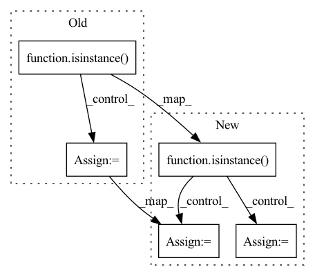

Pattern ID :902

Before Change
self.num_features = num_features
if isinstance(norm, int) and norm:
norm_name = "gLN"
else:
norm_name = norm
self.positional_encoding = PositionalEncoding(num_features, batch_first=False)
encoder_layer = nn.TransformerEncoderLayer(num_features, num_heads, d_ff, dropout=dropout, activation=nonlinear, layer_norm_eps=eps, batch_first=False, norm_first=norm_first)
After Change
self.num_features = num_features
if isinstance(norm, int):
if norm:
norm_name = "gLN"
layer_norm = LayerNormWrapper(norm_name, num_features, causal=False, batch_first=False, eps=eps)
else:
layer_norm = None
else:
norm_name = norm
layer_norm = LayerNormWrapper(norm_name, num_features, causal=False, batch_first=False, eps=eps)
self.positional_encoding = PositionalEncoding(num_features, batch_first=False)
In pattern: SUPERPATTERN
Frequency: 3
Non-data size: 5
Instances
Fragment ID: 1953657
Project Name: tky823/dnn-based_source_separation
Commit Name: cfa36ac738bab30d3e0e095838c90760df4e6d09
Time: 2021-11-13
Author: delta9guitar97@gmail.com
File Name: src/models/sepformer.py
Class Name: IntraTransformer
Method Name: __init__
Parent Class: nn.Module
Fragment ID: 1953658
Project Name: tky823/dnn-based_source_separation
Commit Name: cfa36ac738bab30d3e0e095838c90760df4e6d09
Time: 2021-11-13
Author: delta9guitar97@gmail.com
File Name: src/models/sepformer.py
Class Name: InterTransformer
Method Name: __init__
Parent Class: nn.Module
Fragment ID: 1953655
Project Name: jdb78/pytorch-forecasting
Commit Name: 6ef22a5de1d5da04a50a344e6ca8d5a616ee829f
Time: 2022-01-14
Author: beitner.jan@bcg.com
File Name: pytorch_forecasting/models/nn/embeddings.py
Class Name: MultiEmbedding
Method Name: __init__
Parent Class: nn.Module